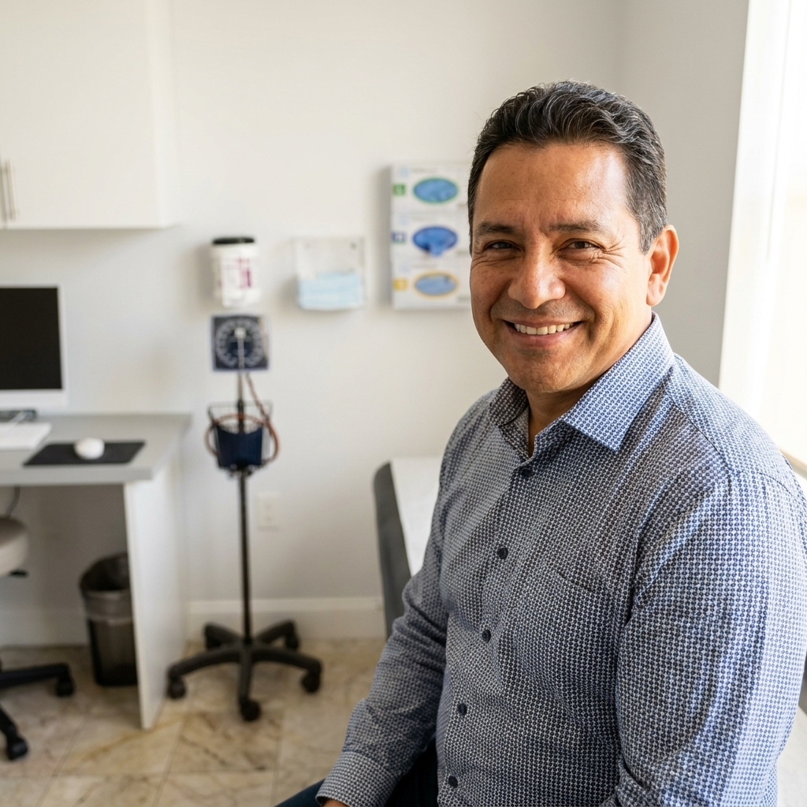

Clinical trial volunteers help bring new treatments to the people who need them — often gaining access to leading care and close medical attention along the way.
Investigational treatments and close monitoring by an experienced research team, often before they're widely available.
Frequent visits, thorough assessments, and a coordinator who knows you by name throughout the study.
Your participation contributes to research that may help your community and future patients everywhere.
Compensation for time and travel may be available for eligible studies. Participation is always voluntary, and you may withdraw at any time.
A snapshot of current opportunities. Eligibility is determined during a confidential screening visit.
Adults 18–75 with Type 2 Diabetes not fully controlled on current medication.
Adults with elevated blood pressure despite two or more medications.
Adults with a BMI of 30+ (or 27+ with a related condition) seeking new options.
Healthy adults interested in contributing to vaccine research.

From my first call to my last visit, the team explained everything clearly and treated me like family. I never felt like a number — I felt cared for.
It starts with a quick, confidential conversation. No commitment.